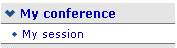

| Prev | Next | |
Being a Session Co-Ordinator you are responsible for scheduling contributions and breaks within your session. These contributions need to be imported by the session manager or conference manager before you can add them to your session.
You are given this co-ordinator access by either the Session Manager or the Conference Manager. The Conference Manager sets the level of modification rights for all of the session co-ordinators. You can access your session by selecting 'my session' from the left hand menu.
